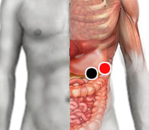

Adenovirus 36
Pares
páncreas - cola de páncreas
peripancreático - peripancreático *

*Nota: En algunos apuntes aparece como peripancreas-peripancreas, es decir que en la misma área pero en posición vertical.
Generalidades:
Virus (ADN) Es responsable de causar problemas respiratorios y oculares. Se confunde con catarro común. También se le asocia con la obesidad ya que infecta la células del tejido adiposo haciendo que éstas incrementen su número y tamaño. Descubierto desde 1978 por Richard Atkinson, cada vez hay más estudios que relacionan la infección de este virus con problemas de obesidad. El más recinte estudio del año 2007 indica que el virus se encuentra en un 30% de las personas obesas, mientras que solo está presente en un 11% de las personas con peso promedio.
Trasmisión:
Hasta ahora no se ha desarrollado una vacuna contra este virus. Se contagia por contacto directo con el infectado o por vía aerea. Sobre todo se debe prestar especial cuidado con las personas delgadas que presenten síntomas de constipación. Los obesos no lo contagian.